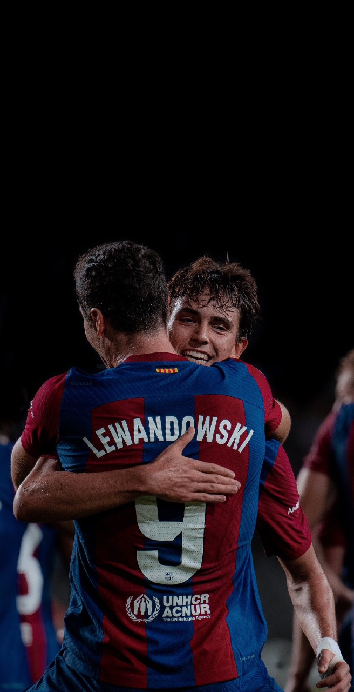
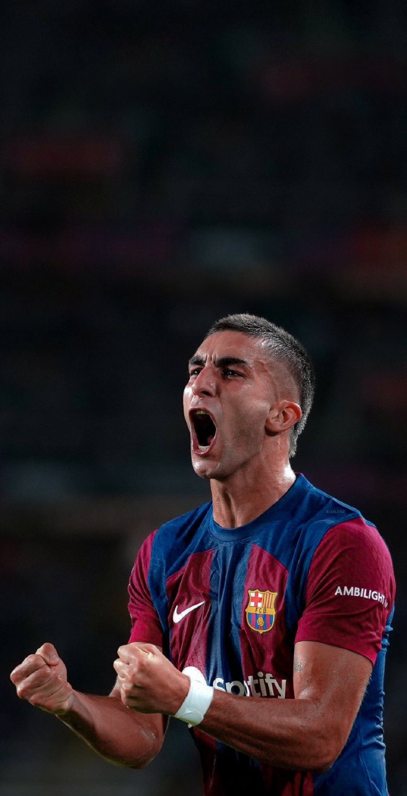
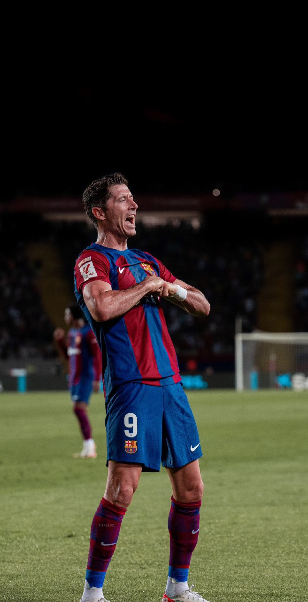

FC Barcelona:
Entertainers again at last
Abednego Obama
5 Min Read
Barcelona had won La Liga last season, yes. But at Barcelona , it's not just about winning, you also have to entertain a public with an exquisite palate, who demand excellence incessantly, even at times when they are aware that the club's current squad doesn't have it in them.
With those memories fresh in the mind, Barca fans looked on in disbelief as their team demolished Real Betis 5-0. There was something in that performance that stood out; at least from the 5 games they have played so far. Don't get me wrong. Barcelona were of course expected to win the game, but the way they controlled the game and bossed the midfield, creating chance after chance, was a sight to behold. Well what happened then? Let's explore the key stats and milestones from that game that you might have missed.
Joao Felix celebrates with Lewandowski after a goal
Goals from Cancelo and Felix meant this was the first time in the 21st century that Barcelona scored two goals in the same match from 2 different Portuguese players.
Felix, for his part, reached a milestone of his own. He is the eighth player in the 21st century to score for both Barcelona and Atletico Madrid in La Liga.
Felix joins an elite list that consists of players such as Luis Garcia, Luis Suarez, Sergio Aguero, Antoine Griezmann and David Villa.
Ferran Torres celebrates a freekick goal which he scored, becoming the first player to score a direct freekick since Lionel Messi
Another player who reached a milestone on the night was Ferran Torres. In fact, the former Manchester City is now the only Barcelona player to score from a direct free-kick since none other than Lionel Messi.
Messi was the last one to score from a direct free-kick when he netted an astonishing goal against Valencia in May 2021. Since then, there have been 41 free-kick attempts between the two goals.
Apart from Torres, Robert Lewandowski, too, found the back of the net against Real Betis.(And btw, the dummy assist from Felix in the build up was so so good)
Robert Lewandowski does his iconic celebration after getting the better of the keeper from a point blank range
The Polish lethal sharpshooter has now scored 36 goals in 51 appearances for Barcelona in all competitions, a record only surpassed by Erling Braut Haaland (59) and Kylian Mbappe (48) among players from Europe's top 5 leagues since last season.
That's a wrap. I have embedded a video player of the game's highlights for those who could not access it for one reason or another.